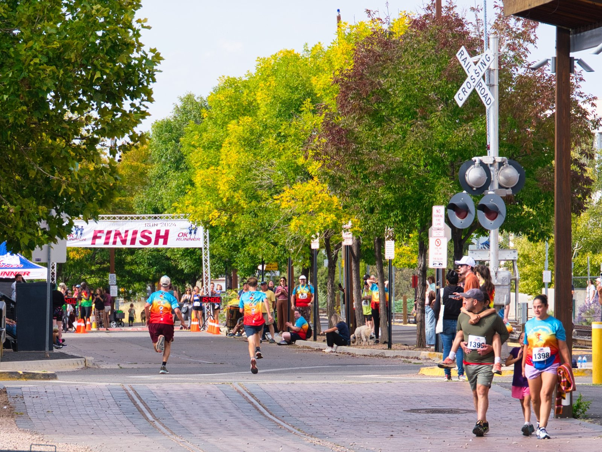
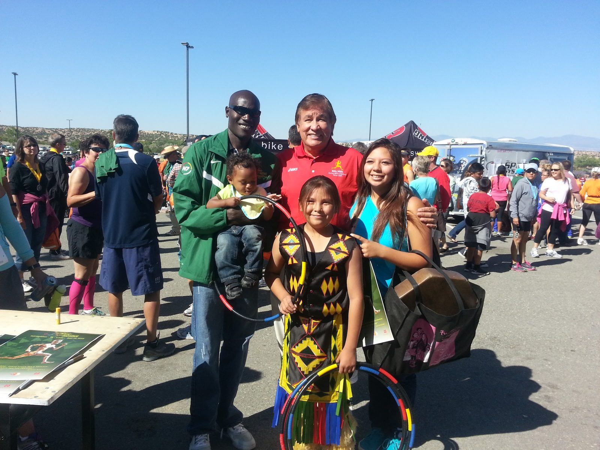

Sunday · September 20, 2026 · 7:30 AM
Run 13.1 miles through the high desert, downhill into the heart of Santa Fe.
The Capitol Ford Santa Fe International Half Marathon — a USATF-certified, point-to-point, net-downhill course from Eldorado to Railyard Park, all above 6,900 feet.
The essentials
Race Info
Everything you need for race weekend — where it starts, where it ends, and how to get your bib.
Start — Eldorado
La Tienda Plaza, Eldorado (7 Caliente Rd), elevation 6,992 ft.
Point-to-point via Old Las Vegas Highway. Gun at 7:30 AM MDT — mornings up here are crisp, so dress for the start, not the finish.
Finish — Railyard Park
Railyard Park (740 Cerrillos Rd), elevation 6,956 ft, in the heart of Santa Fe.
Course cutoff is 3 hours 30 minutes. Live results post as you cross the line.
Packet Pickup & Expo
Expo and packet pickup at Old Warehouse 21, next to Railyard Park:
Friday 12–5 PM and Saturday 10 AM–5 PM.
Race-morning pickup 5:45–7:10 AM at the Eldorado start.
The course
Elevation Profile
Point-to-point and net-downhill: start at 6,992 ft in Eldorado, climb to the 7,330 ft high point at the Woods Loop near mile 4, then descend to the Railyard finish at 6,956 ft. Hover the chart for mile-by-mile elevations.
Mile-by-mile elevation table
| Mile | Elevation (ft) |
|---|
Race day
Live Results
Top finishers update automatically as runners cross the line at Railyard Park. Type your bib number to find your own time the moment it posts.
Official results
The live leaderboard appears here on race day. Past editions are posted on RunSignup:
How results work
- On race day — chip times post live as you finish; the leaderboard refreshes every 30 seconds.
- Find your time — search by bib number in the leaderboard the moment your result posts.
- Questions? — results are official once posted by timing. Find us at the results tent by the finish.
Results are official once posted by timing.
The community
Photos
Free race photos every year — from the start line in Eldorado to the finish at the Railyard.

Racing at 7,000 feet
Respect the Altitude
Santa Fe sits higher than Denver. The thin air is part of the challenge — and the charm. A little planning goes a long way.
Arrive early if you can
Coming from low elevation? Two to three days in town before the race helps your body adjust — and Santa Fe is a fine place to spend them.
Hydrate all week
The high desert is dry and you lose more fluid than you notice. Keep a water bottle in hand for a few days before the gun.
Pace the first four miles
The climb to the 7,330 ft high point comes early. Run it a touch slower than goal pace — the net-downhill back half is where you make it up.
September 20, 2026
Toe the line in Eldorado.
Registration is open now on RunSignup.
Save 15% with code RUNSANTAFE26 — valid Wed, Sept 16 through Tue, Sept 22.